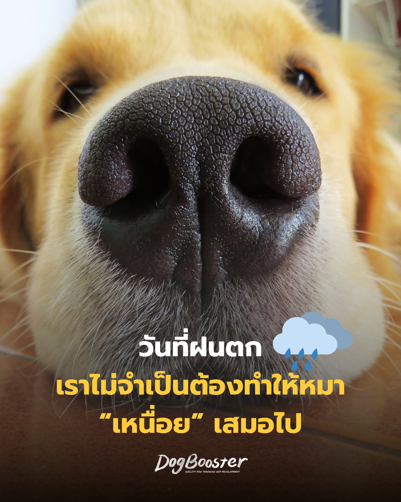

ฝนตกทั้งวัน พาหมาออกไปเดินไม่ได้ สิ่งแรกที่เจ้าของหลายคนนึกถึงอาจเป็น…
“วันนี้ไม่ได้เดิน แล้วจะทำยังไงให้เขาเหนื่อย?”
ต้องหาของเล่นไหม? ต้องโยนบอลให้วิ่งเยอะ ๆ หรือเปล่า? ต้องหากิจกรรมให้ทำทั้งวัน ไม่อย่างนั้นคืนนี้จะไม่ยอมนอนแน่ ๆ
แต่จริง ๆ แล้ว วันที่ฝนตกอาจเป็นวันที่เรา ไม่จำเป็นต้องพยายามทำให้สุนัขเหนื่อยเลยก็ได้ เพราะเป้าหมายของกิจกรรมกับสุนัข ไม่จำเป็นต้องจบที่คำว่า “หมดพลัง” เสมอไป
บางครั้งสิ่งที่สุนัขต้องเรียนรู้ อาจเป็นสิ่งที่ตรงกันข้าม นั่นคือ การหยุดพัก การคิด และการอยู่เฉย ๆ โดยไม่จำเป็นต้องมีอะไรเกิดขึ้นตลอดเวลา
เวลาเห็นสุนัขพลังงานเยอะ เจ้าของมักได้รับคำแนะนำว่า “ต้องพาไปวิ่งเยอะ ๆ” “ต้องเล่นให้เหนื่อย” หรือ “พันธุ์นี้พลังงานสูง ต้องออกกำลังกายหนัก”
การออกกำลังกายเป็นสิ่งสำคัญต่อสุขภาพและคุณภาพชีวิตของสุนัขแน่นอน แต่ถ้าทุกครั้งที่สุนัขมีพลังงาน เราตอบด้วยการเพิ่มกิจกรรมที่ใช้ร่างกายมากขึ้นเรื่อย ๆ สิ่งหนึ่งที่อาจเกิดขึ้นคือ สุนัขเก่งขึ้นในการออกกำลังกาย
จากเคยเดิน 20 นาทีแล้วเหนื่อย วันหนึ่งอาจเดิน 40 นาทีได้สบาย จากเคยเล่นบอล 10 นาที ไม่นานอาจพร้อมเล่นต่ออีกครึ่งชั่วโมง เพราะร่างกายสามารถปรับตัวกับกิจกรรมได้
DogBooster จึงไม่ได้มองเพียงว่า วันนี้หมาใช้พลังงานไปมากแค่ไหน? แต่เราสนใจอีกคำถามหนึ่งด้วยว่า วันนี้เขาได้ฝึกทักษะในการจัดการตัวเองบ้างหรือยัง?
ลองนึกถึงสุนัขสองตัว ตัวแรกเพิ่งวิ่งเล่นมาหนึ่งชั่วโมง จึงกลับมานอนเพราะร่างกายเหนื่อย อีกตัวสามารถเล่นกับเจ้าของ แล้วเมื่อกิจกรรมจบ เขาค่อย ๆ เปลี่ยนจากโหมดเล่นมาเป็นโหมดพักได้
ภาพภายนอกอาจดูเหมือนกัน — ทั้งคู่กำลังนอน แต่สิ่งที่เกิดขึ้นก่อนหน้านั้นต่างกัน ตัวหนึ่ง สงบเพราะหมดแรง ในขณะที่อีกตัวกำลังเรียนรู้ว่า “กิจกรรมจบแล้ว ฉันสามารถพักได้”
นี่เป็นทักษะที่มีคุณค่ามากในชีวิตจริง เพราะเราไม่สามารถพาสุนัขไปวิ่งให้เหนื่อยก่อนทุกสถานการณ์ได้ — ก่อนพาไปร้านกาแฟ ก่อนมีแขกมาที่บ้าน ก่อนเดินทาง ก่อนพาไปเที่ยว หรือก่อนวันที่เจ้าของต้องทำงานทั้งวัน
เราอยากให้สุนัขค่อย ๆ เรียนรู้ว่า ชีวิตไม่ได้มีเพียงสองโหมดคือ “ทำกิจกรรมเต็มที่” กับ “หมดแรงจนหลับ” ระหว่างสองจุดนั้นยังมีพื้นที่ของการผ่อนคลาย การรอ การสังเกต และการเลือกที่จะพักด้วย
แทนที่จะถามว่า “วันนี้จะทำอะไรให้หมาเหนื่อยดี?” ลองเปลี่ยนเป็น “วันนี้เราอยากให้หมาได้เรียนรู้อะไร?” เราอาจใช้เวลาเพียงไม่กี่นาทีเล่นเกมง่าย ๆ ในบ้าน
เป้าหมายระยะยาวคือช่วยให้สุนัขค้นพบว่า ความสงบก็เป็นทางเลือกที่มีคุณค่าได้เหมือนกัน
เมื่อพูดว่าไม่ต้องทำให้หมาเหนื่อยทางร่างกาย หลายคนอาจเปลี่ยนไปอีกสุดทางหนึ่งทันที — ของเล่นฝึกสมอง Puzzle Lick mat เกมดมกลิ่น ฝึกคำสั่ง กิจกรรม Enrichment เรียงกันตั้งแต่เช้าจนเย็น แต่การกระตุ้นสมองตลอดเวลาก็ยังคงเป็น การกระตุ้น
เราไม่จำเป็นต้องหาอะไรให้สุนัขทำทุกนาทีที่เขาตื่น การมีช่วงเวลาที่ไม่มีอะไรเกิดขึ้นบ้าง เป็นส่วนหนึ่งของชีวิตปกติ สิ่งที่เราต้องการจึงไม่ใช่สุนัขที่รอให้มนุษย์สร้าง Entertainment ให้ตลอดเวลา แต่เป็นสุนัขที่ค่อย ๆ เรียนรู้ว่า…
ถ้าวันนี้ฝนตกหนักและพาสุนัขออกไปเดินไม่ได้ตามปกติ ไม่จำเป็นต้องรู้สึกผิดจนต้องพยายามชดเชยทุกนาทีที่หายไป แน่นอนว่าสุนัขยังต้องได้รับการดูแลเรื่องการขับถ่าย การเคลื่อนไหวที่เหมาะสม สุขภาพ และกิจกรรมตามความต้องการของแต่ละตัว
แต่หนึ่งวันที่กิจวัตรเปลี่ยนไป ไม่ได้หมายความว่าเราต้องเปลี่ยนบ้านให้กลายเป็นสนามออกกำลังกาย บางทีวันฝนตกอาจเป็นโอกาสดีเสียด้วยซ้ำ — โอกาสที่เราจะลดความเร็วลง เล่นเกมด้วยกันสั้น ๆ ฝึกอะไรเล็ก ๆ ให้สุนัขได้ใช้จมูก ให้เขาได้คิด แล้วก็… ไม่ต้องทำอะไรบ้าง
เพราะเป้าหมายของการเลี้ยงและฝึกสุนัข ไม่ใช่การสร้างสุนัขที่เราต้องคอยทำให้เหนื่อยเพื่อให้เขาสงบ แต่คือการค่อย ๆ สร้างทักษะที่ช่วยให้เขาใช้ชีวิตร่วมกับเราได้ — รู้ว่าเมื่อไหร่ควรเล่น รู้ว่าเมื่อไหร่ควรคิด และค่อย ๆ เรียนรู้ว่าเมื่อไม่มีอะไรเกิดขึ้น… เขาก็สามารถพักได้เหมือนกัน
DogBooster — เราเชื่อว่าการฝึกไม่ใช่การบังคับให้สุนัขหยุดทำสิ่งที่เราไม่ต้องการ แต่คือการสร้างทักษะและทางเลือกใหม่ ๆ ให้เขาค่อย ๆ เรียนรู้ที่จะใช้ชีวิตร่วมกับเรา
ไม่บังคับ ไม่ลงโทษ — แต่สร้างพฤติกรรมที่เราอยากเห็น